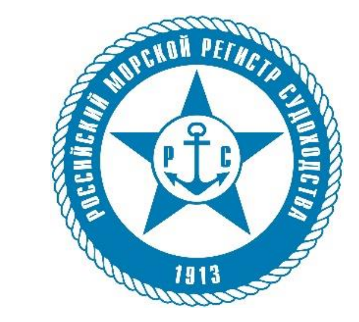
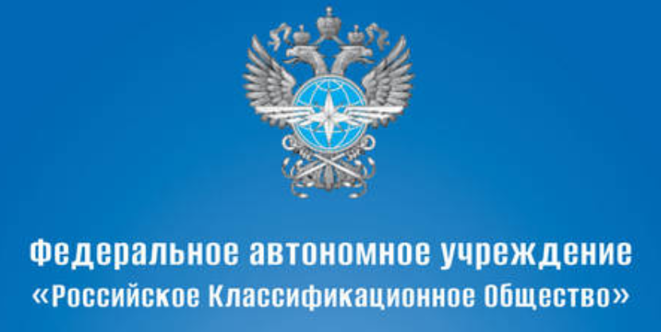

Лицензии/признание
Перечень оказываемых услуг
Российский Морской Регистр Судоходства.
Акт освидетельствования предприятия
№23.03.02.05464.141
Российский Морской Регистр Судоходства.
Акт освидетельствования предприятия
№19.63240.141
Российское классификационное общество.
Свидетельство о признании №10753 от
28.06.2023
Российский Морской Регистр Судоходства.
Согласование 141.РС. 010 от 01.11.2022 г.
Программа проведения измерений крутильных
колебаний судовых валопроводов.
№629.12-01
Согласование НВФ-24.3-1114 от 23.11.2022 г.
Программа проведения измерений крутильных
колебаний судовых валопроводов.
№629.12-01
ИЦ «MTS» имеет свидетельства о признании Российского морского регистра судоходства (РМС), Российского классификационного общества (РКО).
Работы по расчетам крутильных колебаний, торсиографированию валопроводов и оценке технического состояния демпферов крутильных колебаний, вибрационным испытаниям с выдачей рекомендаций по эксплуатации установок выполняются с использованием современной, поверенной аппаратуры и программного обеспечения, одобренного классификационными обществами – РМС и РРР по одобренным методикам.

